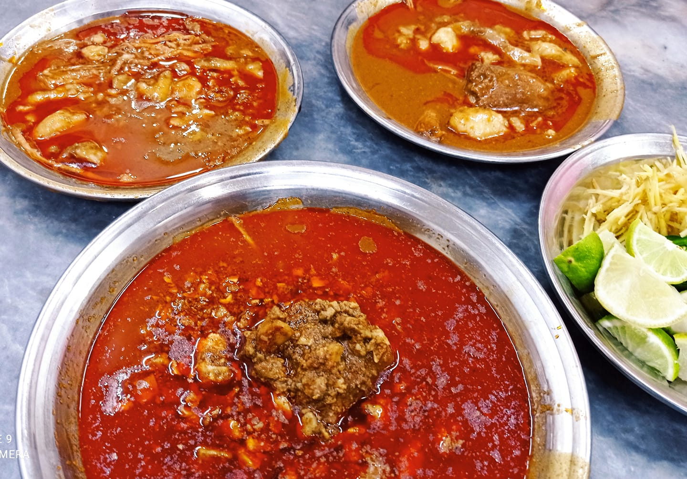
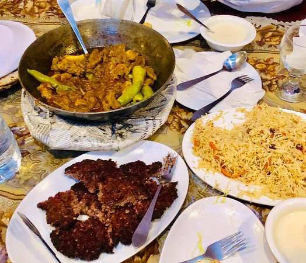

Local Food Guide

Javed Nihari
Javed Nihari is a must-visit in Karachi! Their slow-cooked Nihari is bursting with flavor, and the tender meat melts in your mouth. A true gem for Nihari lovers!.
Location

Student Biryani
Student Biryani is an institution in Karachi! Their biryani is always fragrant and packed with flavor, making it a favorite among locals and tourists alike. Don't miss out on this Karachi classic.
Location

Shaheen Shinwari
"Shaheen Shinwari offers a delightful culinary journey through Pashtun cuisine. Their kebabs are perfectly grilled, and the rice dishes are aromatic and flavorful. A great spot for a hearty meal!.